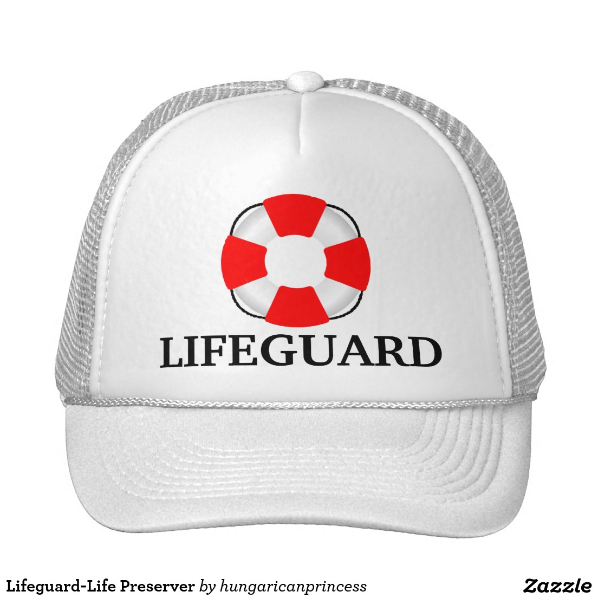

NIPC Web Content Planning – CAP.org
Focus on Life Preserver- Improving Discoverability
- New Editorial Direction
- Next Steps for Creating New Content
Improving Discoverability
Life Preserver Content AnalysisWhat's the most commonly cited issue with Life Preserver?
People can't find it.
1 Year of Analytics (May 1, 2015 - May 1, 2016)
- 1,211 pageviews (homepage)
- 858 pageviews (≈ 15 pages)
- 67% - 100% Bounce rates
What about search?
With "life preserver" as a search term on CAP.org:
- Life Preserver Homepage
- Life Preserver - Identify and Negotiate Conflict
- Life Preserver - Exiting Your Fellowship
Not bad ☺
cap.org receives over 4 million pageviews every year. What percentage of cap.org users leverage site search?
- A. 9%
- B. 17%
- C. 3%
- D. 32%
C. 3%
(Technically it's 2.8%; current as of May 12, 2016)Sample search term testing with Google
- "life preserver pathology"
- "transitioning to full-time work in pathology"
- "life preserver CAP"
"life preserver pathology"
- New in Practice - Life Preserver
- New-in-Practice Pathologists Transition to Work
- New in Practice Committee
- College of American Pathologists Home (cap.org)
Two false assumptions:
- Our end users are savvy enough to enter the exact search term for the LP program.
- Our end users have similar behaviors and interactions as CAP committee members or staff.*
"transitioning to full-time work in pathology"
- Speech language pathologist
- 10 Least Stressful Jobs of 2011
- ...
"life preserver cap"
So, how do we improve the discoverability of Life Preserver?
- Improve search engine optimization (SEO)
- Create engaging, original content
- Take a web-first approach
- Keep users on the site
SEO Improvement #1: Titling
Use language that is human and machine readable. New titling is considered an easy win.
- Life Preserver vs pathology career development
- Learn the Best Questions to Ask a Pathologist vs Questions Every New in Practice Pathologst Should Ask Senior Colleagues
- Distinction between Make the Transition from Fellowship to Residency vs Adjust to Practice Life
SEO Improvement #2: Establish credibility
Check! Content on CAP.org will already be considered "credible" by external search engines because of the organization's reputation and status as a nonprofit.
SEO Improvement #3: Create web-first content
Nielsen described PDFs as "unfit for human consumption"...
in 2003.
SEO Improvement #4: Keep Users on the Site
- Create long-form content (≈1200 words or more).
- Gone are the days of all web content needing to be short.
- Drive users to content within CAP.org.
- Do not send users to external sites.
- Avoid lists that emulate a search engine results page (SERP)
New Editorial Direction
Fewer Topics, More Long-Form/Engaging ContentComparison of Engaging Content on Life Preserver
Sample 1 →

BURNING QUESTION: What can the NIPC offer that our users can't find elsewhere?
Currently, Life Preserver sends users toLong-form content
Why?
- Keep users engaged and on the site
- Our target audience is highly educated
- Accustomed to text-based content
- Not averse to reading longer articles
- Our target audience is interested in hearing the stories of fellow physicians
- Added bonus: Google privileges "in-depth" content (ie, longer articles written by experts), which means better SEO
Next Steps for Creating New Content
Editorial Calendar & Writing AssignmentsGroup Discussions
(From pre-meeting assignment)- Imagine you are creating a blog about your experiences as a new-in-practice pathologist. What would you write about for your first post?
- With this first post in your mind’s eye, how can you relate the content therein directly to your experiences as a CAP member?
- Further, how does your story relate to one of the subtopics in Life Preserver's 2 main content categories (ie, Transition to Work and Establishing a Career Base)?
Goal 1: Writing Assignments
Content will be created and published intermittently between now and December 31, 2016.Goal 2: New Titles for Life Preserver
Next steps:
- I will schedule initial consults with individual writers over the next two weeks.
- After initial consultations, Digital will send out an editorial calendar to the NIPC for the remainder of 2016.
- We will also send along instructions regarding the tools we will use for editing and collaboration (ie, Google Drive).
- I will praise you incessantly for all your hard work and for keeping me gainfully employed